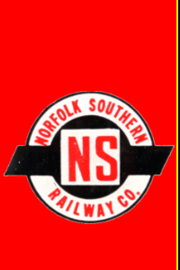

|  |
|
||||||||||||||||||||||||||||
About UsNorfolk & Southern Historical Society, IncorporatedThe Norfolk & Southern Historical Society was organized on April 20th, 2002, and incorporated under the laws of the State of North Carolina. A seven-member Board of Directors, which includes the following four officers, governs the organization: (1) President, (2) Vice-President, (3) Secretary, and (4) Treasurer. Members of the Board of Directors serve for terms of three years each, elected in a rotating schedule so that no more than three members' terms expire in any year. The Society is organized to secure and study the history of, and educate the public about the history of the original Norfolk (&) Southern Railroad/Railway as a charitable and educational organization, within the meaning of Sections 501(c)(3) of the Internal Revenue Code of 1986, and to receive gifts which qualify under section 170 of that code, or the corresponding provisions of any future United States Internal Revenue Code. The principal office and place of business is at 2222 West Club Boulevard, Durham, Durham County, North Carolina. It is important to note that the railroad which the organization studies is NOT the current Norfolk Southern Railway, but only a small portion of that railway, specifically that portion which was chartered in the state of North Carolina as the Elizabeth City and Norfolk Railroad in January 1870, was renamed the Norfolk Southern Railroad in January 1883, was renamed the Norfolk and Southern Railroad in 1891, was subsequently reorganized and expanded several times, and was merged into the Southern Railway System on January 1st, 1974. The Society holds an annual meeting, usually the third Saturday in April, at a location, which is selected by the Board of Directors at the previous year's annual meeting. Previous meetings have been held as such:
The Society publishes a semi-annual newsletter, the Eastern Carolina Despatch, which contains information about the society's activities and about the history of the original Norfolk Southern Railroad. For additional information about the Society or the original Norfolk Southern Railroad, please contact the President at the address below.
Previous What's New from older website For Comments or Questions send an e-mail to railroad@nc.rr.com. |